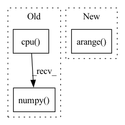

Pattern ID :15219

Before Change
y /= max_label
batch_fake_images = netG(z, y)
raw_fake_images[tmp:(tmp+batch_size)] = batch_fake_images.cpu().detach().numpy()
raw_fake_counts[tmp:(tmp+batch_size)] = y.cpu().view(-1).detach().numpy()
tmp += batch_size
//remove extra entries
raw_fake_images = raw_fake_images[0:NFAKE]
After Change
tmp = 0
while tmp < NFAKE:
z = torch.randn(batch_size, GAN_Latent_Length, dtype=torch.float).to(device)
labels = np.random.choice(np.arange(num_classes),size=batch_size,replace=True)
raw_fake_labels[tmp:(tmp+batch_size)] = labels
labels = torch.from_numpy(labels).type(torch.long).to(device)
batch_fake_images = netG(z, labels)
In pattern: SUPERPATTERN
Frequency: 3
Non-data size: 3
Instances
Fragment ID: 51418209
Project Name: ubcdingxin/improved_ccgan
Commit Name: 8a85572c67f2b5e51be8e71eb77edbead26b2c0a
Time: 2020-03-11
Author: dingx92@gmail.com
File Name: CellCounting/Train_cDCGAN.py
M Class Name: AnonimousClass
N Class Name: AnonimousClass
M Method Name: SampcDCGAN(7)
N Method Name: SampcDCGAN(7)
M Parent Class:
N Parent Class:
M File Name: CellCounting/Train_cDCGAN.py
N File Name: CellCounting/Train_cDCGAN.py
M Start Line: 134
M End Line: 159
N Start Line: 136
N End Line: 165
'>
Before Change
mse_loss = torch.nn.MSELoss()(predictions, target.to(predictions.device))
pVar = 1 - mse_loss / torch.var(target.to(mse_loss.device))
ax.plot(predictions.detach().cpu().numpy(), label=f"{desc} (pVar: {pVar.detach().cpu().item():.3f})")
ax.plot(target.detach().cpu().numpy(), label="Target")
if spikes is not None:
After Change
predictions, target = to_tensor(self._mean_given_timeseries[:, feature_index]), to_tensor(target)
if self.is_mean:
ax.fill_between(
np.arange(predictions.shape[0]),
to_numpy(predictions) - to_numpy(self._std_given_timeseries[:, feature_index]),
to_numpy(predictions) + to_numpy(self._std_given_timeseries[:, feature_index]),
alpha=0.2, color="blue"
'>
Fragment ID: 51418210
Project Name: neurotorch/neurotorch
Commit Name: f5cbdb183f2bcf570692e9c0a1f0e9c91ae63a6b
Time: 2022-09-14
Author: 50332514+JeremieGince@users.noreply.github.com
File Name: src/neurotorch/visualisation/time_series_visualisation.py
M Class Name: Visualise
N Class Name: Visualise
M Method Name: plot_single_timeseries_comparison(8)
N Method Name: plot_single_timeseries_comparison(8)
M Parent Class:
N Parent Class:
M File Name: src/neurotorch/visualisation/time_series_visualisation.py
N File Name: src/neurotorch/visualisation/time_series_visualisation.py
M Start Line: 281
M End Line: 285
N Start Line: 305
N End Line: 315
'>
Before Change
tensor = self.zca.apply(tensor)
else:
// print("No Zca")
tensor = tensor.data.cpu().numpy()
if self.eval is False and FLAGS.translate > 0:
bs, lenx, leny = tensor.shape[0], tensor.shape[2], tensor.shape[3]
pad = FLAGS.translate
After Change
tensor = F.pad(tensor, [pad, pad, pad, pad])
index = np.random.randint(0, pad * 2, size=[2, bs])
indexx, indexy = index[0], index[1]
inv_idx = torch.arange(leny - 1, -1, -1).long().cuda()
new_tensor_list = []
for i in range(bs):
'>
Fragment ID: 51418211
Project Name: taufikxu/triple-gan
Commit Name: 5f4d74f329e6b493abfbc1b1d9fe79acb0eda810
Time: 2020-06-19
Author: kunxu.thu@gmail.com
File Name: library/data_iters.py
M Class Name: AugmentWrapper
N Class Name: AugmentWrapper
M Method Name: __call__(2)
N Method Name: __call__(2)
M Parent Class: object
N Parent Class: object
M File Name: library/data_iters.py
N File Name: library/data_iters.py
M Start Line: 78
M End Line: 110
N Start Line: 83
N End Line: 106